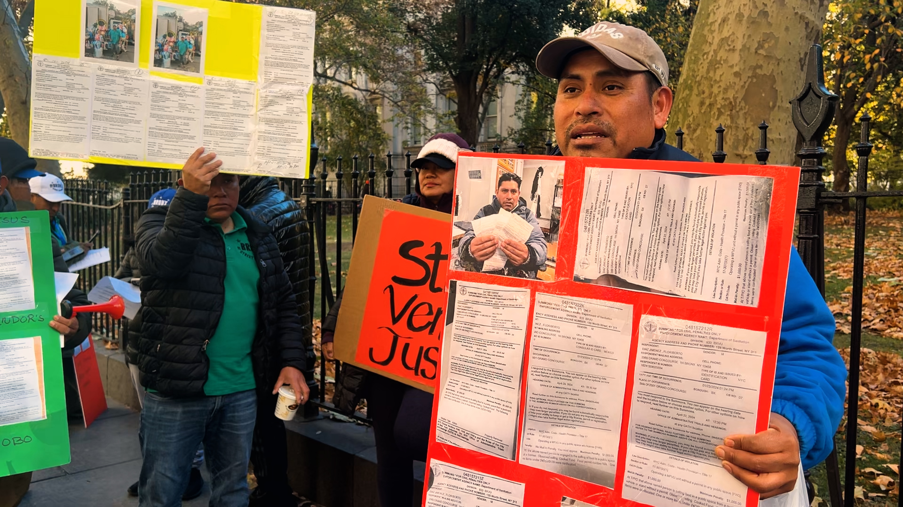

Fines and court summons against street vendors in New York City have been concentrated in four areas of Queens since Mayor Eric Adams’ administration began in January 2022 through October 2024. A database analysis of OATH’s public database shows that Elmhurst, Jackson Heights, Jamaica and Corona are the areas where this population has been penalized the most.
Floriberto Díaz, a street vendor from Queens, said that this job allows him to pay for the food and education of his two children. He said that in a single day, he received six fines, each for $1,000, while working on Roosevelt Avenue.

“We don't feel comfortable like before and we only want a permit that allows us to work, work freely, without fear toward the Department of Sanitation or the Police. Every day they take us off the streets. We have no way to survive, I don't even have enough money to pay for the tickets. $6,000 is a lot of money.”
According to the mapped data, the area with the most fines and court summonses, 853, is Elmhurst, Queens. The neighborhood includes parts of Roosevelt Avenue, a corridor known for hosting dozens of street vendors.